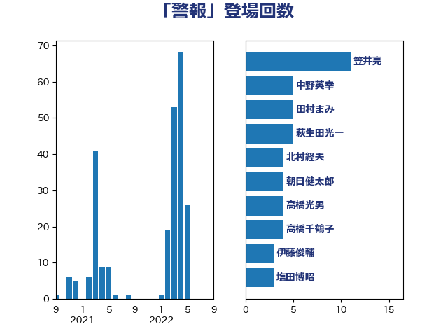

単語「警報」

| 笠井亮 | 日本共産党 | 11 回 |
| 中野英幸 | 自由民主党 | 5 回 |
| 田村まみ | 国民民主党 | 5 回 |
| 萩生田光一 | 自由民主党 | 5 回 |
| 北村経夫 | 自由民主党 | 4 回 |
| 朝日健太郎 | 自由民主党 | 4 回 |
| 高橋光男 | 公明党 | 4 回 |
| 高橋千鶴子 | 日本共産党 | 4 回 |
| 伊藤俊輔 | 立憲民主党 | 3 回 |
| 塩田博昭 | 公明党 | 3 回 |
| 大口善徳 | 公明党 | 3 回 |
| 泉田裕彦 | 自由民主党 | 3 回 |
| 石垣のりこ | 立憲民主党 | 3 回 |
| 磯崎仁彦 | 自由民主党 | 3 回 |
| 秋本真利 | 自由民主党 | 3 回 |
| 竹内真二 | 公明党 | 3 回 |
| 長浜博行 | 無所属 | 3 回 |
| 国定勇人 | 自由民主党 | 2 回 |
| 大西英男 | 自由民主党 | 2 回 |
| 太田房江 | 自由民主党 | 2 回 |
| 杉久武 | 公明党 | 2 回 |
| 芳賀道也 | 国民民主党 | 2 回 |
| 赤羽一嘉 | 公明党 | 2 回 |
| 足立敏之 | 自由民主党 | 2 回 |
| 中野洋昌 | 公明党 | 1 回 |
| 今井絵理子 | 自由民主党 | 1 回 |
| 加田裕之 | 自由民主党 | 1 回 |
| 古賀之士 | 立憲民主党 | 1 回 |
| 吉良州司 | 無所属 | 1 回 |
| 大塚耕平 | 国民民主党 | 1 回 |
| 大野泰正 | 自由民主党 | 1 回 |
| 宮口治子 | 立憲民主党 | 1 回 |
| 寺田静 | 無所属 | 1 回 |
| 小野泰輔 | 日本維新の会 | 1 回 |
| 尾崎正直 | 自由民主党 | 1 回 |
| 山崎正恭 | 公明党 | 1 回 |
| 山崎誠 | 立憲民主党 | 1 回 |
| 岡本あき子 | 立憲民主党 | 1 回 |
| 岩渕友 | 日本共産党 | 1 回 |
| 岸信夫 | 自由民主党 | 1 回 |
| 岸田文雄 | 自由民主党 | 1 回 |
| 平林晃 | 公明党 | 1 回 |
| 早坂敦 | 日本維新の会 | 1 回 |
| 木村英子 | れいわ新選組 | 1 回 |
| 杉本和巳 | 日本維新の会 | 1 回 |
| 杉田水脈 | 自由民主党 | 1 回 |
| 松山政司 | 自由民主党 | 1 回 |
| 森本真治 | 立憲民主党 | 1 回 |
| 河野義博 | 公明党 | 1 回 |
| 熊野正士 | 公明党 | 1 回 |
| 片山さつき | 自由民主党 | 1 回 |
| 石井正弘 | 自由民主党 | 1 回 |
| 石井章 | 日本維新の会 | 1 回 |
| 石川昭政 | 自由民主党 | 1 回 |
| 礒崎哲史 | 国民民主党 | 1 回 |
| 神田潤一 | 自由民主党 | 1 回 |
| 福山哲郎 | 立憲民主党 | 1 回 |
| 篠原孝 | 立憲民主党 | 1 回 |
| 蓮舫 | 立憲民主党 | 1 回 |
| 藤田文武 | 日本維新の会 | 1 回 |
| 近藤和也 | 立憲民主党 | 1 回 |
| 長峯誠 | 自由民主党 | 1 回 |
| 阿部知子 | 立憲民主党 | 1 回 |
| 馬場雄基 | 立憲民主党 | 1 回 |